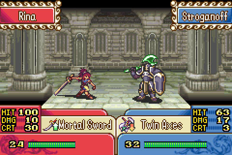

Eternal Winter: Custom FE Engine Hack
- Role
- Lead Systems Designer & Programmer
- Type
- Solo project, GBA Fire Emblem engine hack
- Downloads
- 6,000+
- Tools
- Event Assembler / ColorzCore, c2ea, ARM THUMB ASM, lyn, Excel / Sheets, Git


pipeline: Excel → CSV export → c2ea → Event Assembler + lyn-linked ASM → patched GBA ROM → playtest
- Took mechanics I love from Fire Emblem Heroes and League of Legends (overloaded mechanics, incredibly complex interactions), reverse-engineered how they actually work, and rebuilt them inside the GBA Fire Emblem engine. All told, that's custom skills across 50+ heroes, written in custom ASM: hand-written ARM THUMB routines hooked into the battle calculations, placed in free space, assembled into the ROM with Event Assembler (ColorzCore), and linked with lyn.
- Built a data-driven implementation pipeline so I'd never have to hex-edit anything. I used CSV spreadsheets and buildfiles: every hero, class, item, and skill lives in a sheet, and one build turns all of it into a playable ROM. It's all in Git, and most balance changes come down to editing a single cell.
- From that same data, I tuned progressions and encounters: base stats, growth rates, and level curves for every hero, plus enemy placement, reinforcement timing, and how each difficulty mode scales. Spreadsheet formulas got the numbers close, and full playthroughs showed me where they were still wrong.